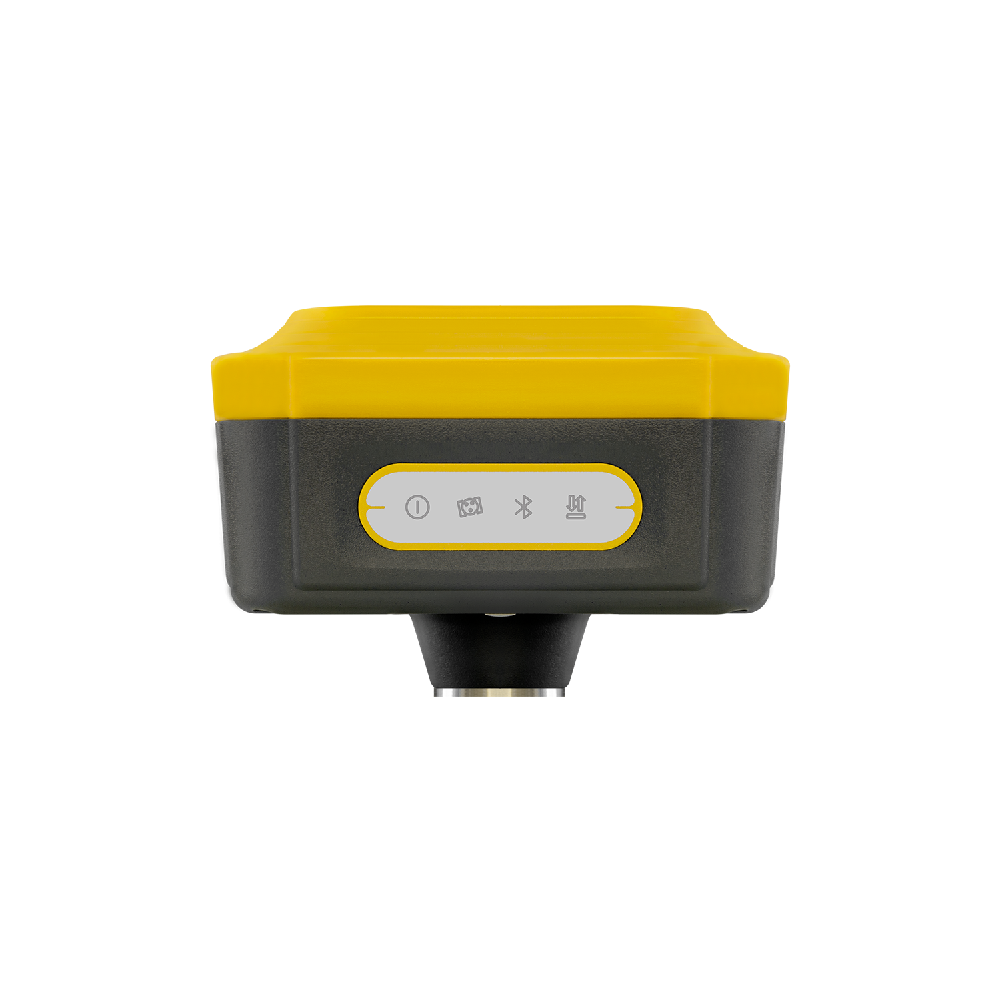

QField partners with hardware manufacturers through two labels — QField Certified, tested by our team, and Works with QField, verified by producers.
The QField certified hardware program is designed to provide you with hardware that has been thoroughly tested and certified by our team to work reliably with the latest QField version across various platforms. The Works with QField badge, is designed to showcase hardware devices are compatible with QField. Testing is performed by the manufacturers according to our program checklist.
By using the Buy now referral links provided below, you are directly supporting the development of QField. Your contribution helps us to continue improving and expanding this project.
Happy Mini Q

The Happy MiniQ is a 170 gramms sub-centimetre precision GNSS with IMU built explicitly for QField
The HAPPY MINI Q is small and light but keeps all the features of the big boys: 1408 channels, full-constellation antenna, IMU and excellent performance specially in complex environments.
Happy Monch 2
The HAPPY MÖNCH II is a fantastic sensor that offers exceptional working speed with uncompromising accuracy. The state-of-the-art technology it is equipped with ensures a lightning-fast fix with centimeter precision.
Samsung Tab Active 5

The Tab Active5 is a powerhouse inside and out. Fuelled by a Exynos 1380 processor and memory that is expandable to up 1TB with a MicroSD card1, this tablet is ready for any task you throw at it.
Empower frontline teams with the rugged Samsung Galaxy Tab Active5—our toughest tablet yet. Designed for the harshest environments, it's glove and dirt-friendly, thanks to its adaptable touch screen and compatible S Pen. Keep tapping, typing and sketching without missing a beat.
Samsung XCover 7

The Galaxy XCover7 is like the superhero of rugged phones. It's built to MIL-STD-810H standards
Galaxy XCover7 combines Octa-core processing power with 6GB of Memory for fast and efficient performance for the task at hand. Enjoy 128GB of internal storage and add up to 1TB more with microSD card.
By using the Buy now referral links provided below, you are directly supporting the development of QField. Your contribution helps us to continue improving and expanding this project.
x: Supported -: Not supported ?: Unknown